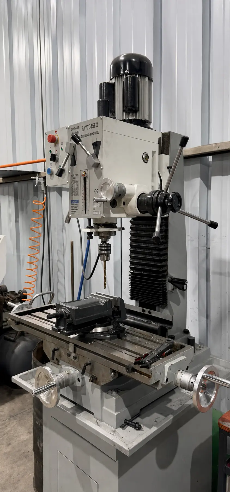
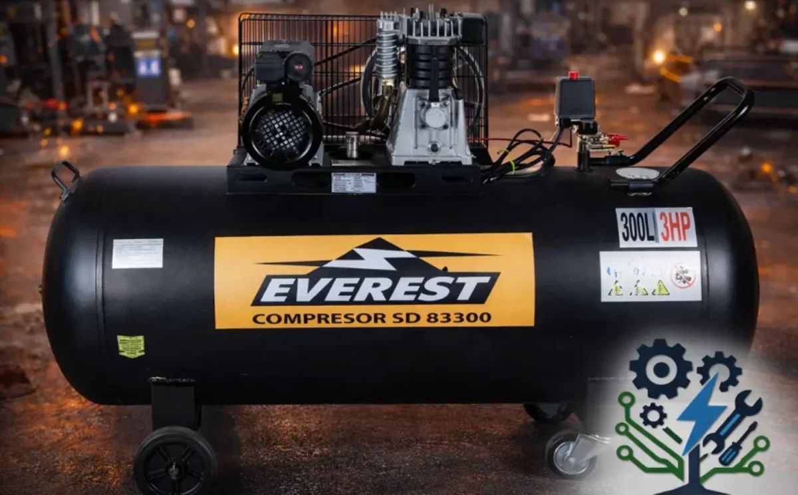

Equipo real
Equipo realPunzonadora y cizalla hidráulica combinada Q35Y-20
Equipo combinado que MAQELEC utiliza en trabajos reales de punzonado, corte y preparación de perfiles, y que también suministra con instalación y soporte.
Ver ficha técnica →Equipos que MAQELEC puede suministrar o importar y, cuando existe experiencia directa en taller, demostrar mediante trabajos reales, con puesta en marcha, capacitación y soporte.
Equipo realEquipo combinado que MAQELEC utiliza en trabajos reales de punzonado, corte y preparación de perfiles, y que también suministra con instalación y soporte.
Ver ficha técnica → Equipo real
Equipo realTorno paralelo para cilindrado, refrentado, roscado y fabricación de piezas. MAQELEC trabaja con este modelo y también puede suministrarlo con instalación y soporte.
Ver ficha técnica →
Equipo realMáquina combinada para perforado y fresado de piezas metálicas. MAQELEC trabaja con este equipo y también puede suministrarlo con instalación, puesta en marcha y soporte.
Ver ficha técnica → Imagen referencial
Imagen referencialAlternativa para procesos de corte industrial. La configuración final se define según material, formato y producción requerida.
Consultar configuración → Imagen referencial
Imagen referencialSolución de mayor potencia para proyectos industriales. Se cotiza con importación directa y acompañamiento técnico.
Consultar configuración → Imagen referencial
Imagen referencialConjunto referencial para integrar control CNC, altura de antorcha, fuente plasma y suministro de aire en una solución de corte.
Consultar configuración →
Imagen referencialCompresor industrial recuperado del catálogo anterior de MAQELEC, disponible como referencia para configuraciones de taller.
Consultar configuración → Equipo real
Equipo realSistema CNC para corte automatizado de planchas metálicas. MAQELEC trabaja con esta mesa, presta el servicio de corte y puede suministrar una configuración equivalente con instalación y soporte.
Ver ficha técnica →Podemos buscar e importar otros equipos. Envíanos el proceso, capacidad o modelo que necesitas.
Enviar requerimientoCuéntanos material, espesor, formato, producción esperada y energía disponible. Con esos datos podemos orientar una configuración.